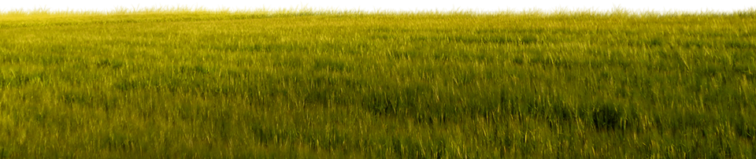

Inicio
¿Quienes
Somos?
¿Que Hacer
por el Planeta?
Historias
y Noticias
Nuestra
Tierra
WWF Voluntariado Juvenil y el Programa de Pasantías
Estas entre el 20 y 27 y se puede financiar sus propios gastos Echa un vistazo a Programa mundial de Voluntariado Juvenil y prácticas de WWF ...
O, obtener información sobre oportunidades de voluntariado de WWF / prácticas en su país o región:
Argentina | Australia | Canadá | China, | del Este y el sur de África | Finlandia | Francia | Alemania | Grecia | Hong Kong | Hungría | Italia | India | Indonesia | Países Bajos | Nepal | Nueva Zelanda | Noruega | Malasia | Paraguay | Pakistán | Filipinas | Singapur | Sudáfrica | Pacífico | España | Suecia | Suiza / Alemania | Suiza / Francés | Tanzania | EE.UU. | Emiratos Árabes Unidos | Vietnam
¿Quienes Somos?
Historia
Contactos
¿Qué Hacer por el Planeta?
Vida Verde
Voluntariado
Donar a WWF
Historias y Noticias
Historias
Noticias
Videos
Nuestra Tierra
Especies en Peligro Crítico
Clima
Bosques
